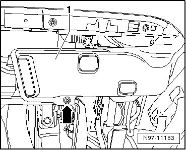
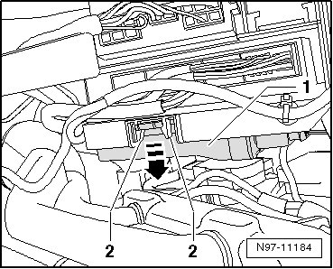
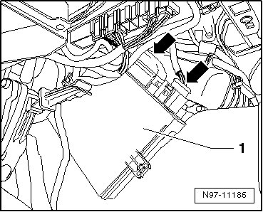
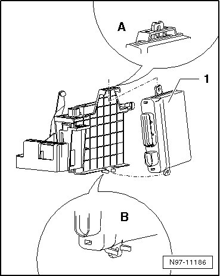

Access/Start Authorization Control Module
Access/Start Authorization Control Module
• Perform the following procedure if the control module will be replaced:
• with immobilizer through 11.06 --> [ Access/Start Authorization Control Module, Replacing ] Immobilizer, through 11.06
• with immobilizer from 12.06 --> [ New Access/Start Authorization Control Module ] Immobilizer, from 12.06 or --> [ Used Access/Start Authorization Control Module ] Immobilizer, from 12.06
Removing
- Switch off ignition, switch off all electrical consumers and remove ignition key.
- Remove the driver lower storage compartment
- Remove the bolt - arrow - and the ventilation duct - 1 -.

- Press both retaining tabs - 2 - apart and pivot the access/start authorization control module - 1 - out of the bracket in the - direction of the arrow -.

- Remove the access/start authorization control module - 1 - downward from the bracket. Be careful of the connected wires.

- Release and disconnect both connectors - arrows - and remove the access/start authorization control module - 1 - from the vehicle.
Installing
Install in reverse order of removal, noting the following:
- Connect both connectors on the access/start authorization control module.
- First insert the access/start authorization control module - 1 - in the top of the duct - A - and then press it into the retainer - B -.

- Make sure the control module engages correctly in its bracket.